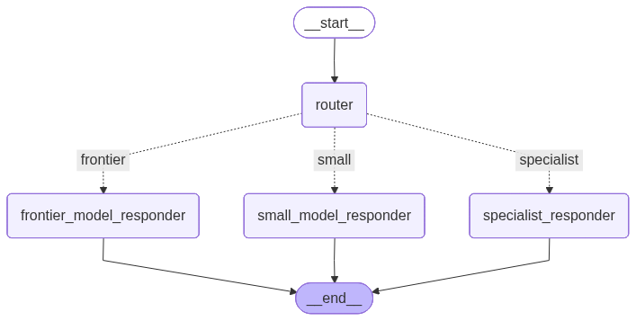
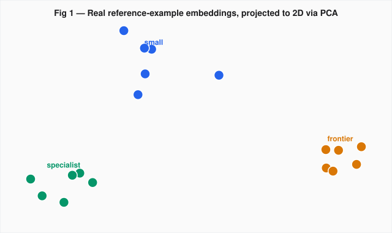
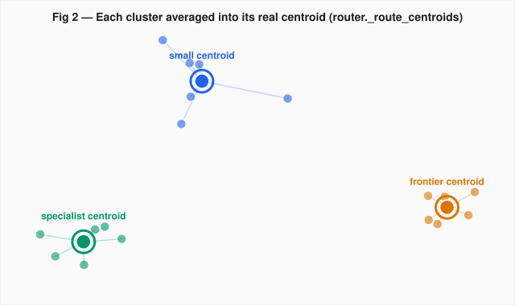
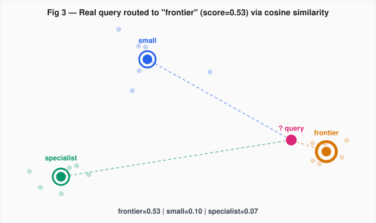

From "ask the LLM which model to use" to a cheap, fast embedding-similarity classifier — with the LLM kept around as a safety net.
If every incoming query — "hi", a billing complaint, a request to compare distributed-systems architectures — gets routed to the same frontier-tier model, you're paying frontier prices (and frontier latency) for queries a much cheaper model could've answered just as well. The fix is a router: something that looks at a query and decides which tier should handle it.
Query → Router → { Small model | Frontier model | Specialist } → Reply"Best for: support triage, cost optimisation"
We built this as a small LangGraph workflow with three response tiers:
small → gpt-4o-mini for greetings, quick facts, lookupsfrontier → gpt-4o for deep reasoning, multi-step analysisspecialist → gpt-4o with a support-triage persona for account/billing/troubleshooting queries
router, which conditionally dispatches to one of the three responder nodes.The interesting question — the one this article is actually about — is: how does the router decide?
The obvious first move (and a perfectly reasonable one to ship) is LLM-as-router: send the query to an LLM with a classification prompt and structured output, and let it pick the tier.
class RouteDecision(BaseModel):
route: Literal["small", "frontier", "specialist"] = Field(
description="Which model tier should handle this query"
)
reason: str = Field(description="One-sentence justification for the chosen route")
def route_query(state: OrchestrationState) -> dict:
query = state["query"]
llm = OpenAILLM().get_llm().with_structured_output(RouteDecision)
chain = router_prompt | llm
decision = chain.invoke({"query": query})
return {"route": decision.route, "route_reason": decision.reason}This works, and it's semantically about as accurate as routing gets — the classifier reads the query like a human would and reasons about intent. But look closely at the cost: every single query now makes an extra gpt-4o call before it even reaches the model that actually answers it. That's an additional API round-trip, additional latency, and additional spend — on top of whatever the responder itself costs. For a high-traffic support-triage system, that overhead adds up fast.
The insight: classifying "what kind of query is this?" doesn't actually require an LLM to reason about it — it requires recognizing which group of similar things this query belongs to. That's exactly what embeddings + similarity search are good at, and they're an order of magnitude cheaper and faster than a chat completion.
So we replaced the LLM router with a three-step pipeline:
prompts/route_examples.py)This is the part worth slowing down on, because "centroid" sounds fancier than it is. A centroid is just the average position of a group of points. Here's what that looks like with our real reference data — 6 example queries per tier, embedded with text-embedding-3-small, then projected from their native 1536 dimensions down to 2D with PCA purely so we can draw them on a page:

ROUTE_EXAMPLES. Notice they already separate into three visible regions before we do anything else — that's the embedding model recognizing that "Hi, how are you?" and "What's the capital of France?" mean similar kinds of things, distinct from "I was charged twice, can I get a refund?"Now we collapse each cluster down to a single representative point — its centroid — by averaging the coordinates of every point in it:

EmbeddingRouter._build_centroids — not illustrative placeholders.And here's the actual function that does it — note it embeds all 18 example sentences in a single batched API call (cheap, and done only once at startup), then slices the resulting vectors back into their tiers and averages each slice:
def _build_centroids(self, examples: dict[str, list[str]]) -> dict[str, np.ndarray]:
routes = list(examples.keys())
flat_texts = [text for route in routes for text in examples[route]]
flat_vectors = np.array(self.embeddings.embed_documents(flat_texts))
centroids = {}
offset = 0
for route in routes:
count = len(examples[route])
centroids[route] = flat_vectors[offset:offset + count].mean(axis=0)
offset += count
return centroidsThat's the entire "model" — three vectors, computed once, cached for the lifetime of the process via a get_embedding_router() singleton. No training loop, no labeled dataset beyond a handful of examples, no GPU.
Once we have the three centroids, classifying a new query is just: embed it, compute its cosine similarity to each centroid, and pick the winner — but only if we're confident. We gate the decision on two thresholds:
If either check fails, we return None and let the original LLM router make the call — preserving its semantic accuracy exactly for the ambiguous cases where it earns its cost.
def classify(self, query: str) -> tuple[str | None, float]:
query_vector = np.array(self.embeddings.embed_query(query))
scores = {
route: self._cosine_similarity(query_vector, centroid)
for route, centroid in self._route_centroids.items()
}
ranked = sorted(scores.items(), key=lambda item: item[1], reverse=True)
best_route, best_score = ranked[0]
second_best_score = ranked[1][1]
if best_score >= self.confidence_threshold and (best_score - second_best_score) >= self.margin_threshold:
return best_route, best_score
return None, best_score
frontier centroid by a wide margin, clearing both gates confidently.And the node that ties it together — try the embedding router first, fall back to the LLM router on low confidence or any error (rate limits, network blips):
def route_query(state: OrchestrationState) -> dict:
query = state["query"]
try:
route, score = get_embedding_router().classify(query)
except Exception:
route, score = None, None
if route is not None:
return {"route": route, "route_reason": f"Embedding similarity match (score={score:.2f})"}
llm = OpenAILLM().get_llm().with_structured_output(RouteDecision)
chain = router_prompt | llm
decision = chain.invoke({"query": query})
return {"route": decision.route, "route_reason": f"LLM fallback: {decision.reason}"}We ran it end-to-end against the live graph with one query per tier — no mocking, real OpenAI embeddings and real centroids:
All three landed on the correct tier — and all three were decided without a single extra LLM call. The fallback path is still there, quietly waiting for the genuinely ambiguous query that the embedding gate isn't confident about.
This is "good enough to ship and observe." The natural follow-ups, which we'll dig into in Part 2:
confidence_threshold=0.30 and margin_threshold=0.03 are starting points; route_reason logs the score on every decision, so we can mine real traffic to find the right cutoffsCode references: llm/embedding_router.py, prompts/route_examples.py, nodes/nodes.py, graph/graph_builder.py.